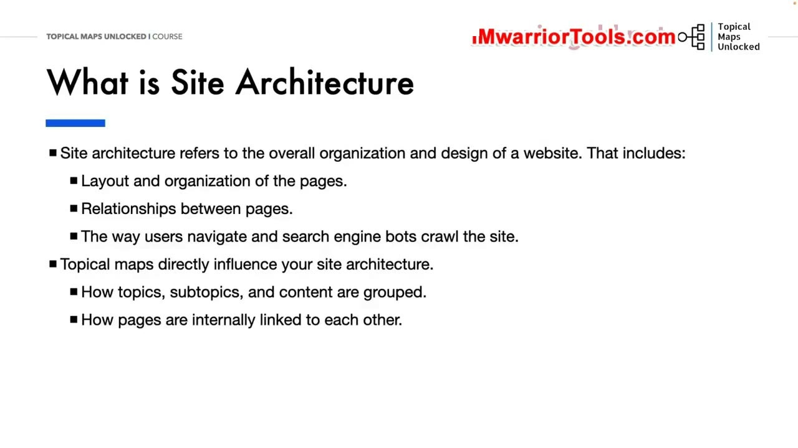
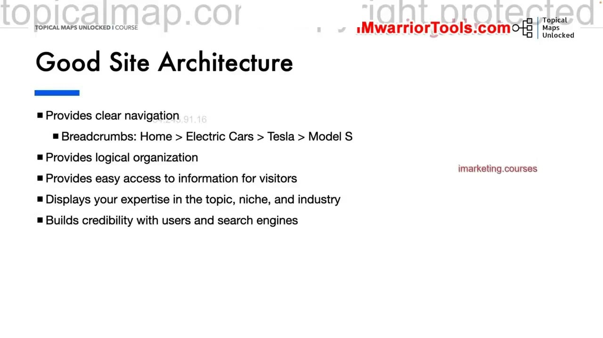
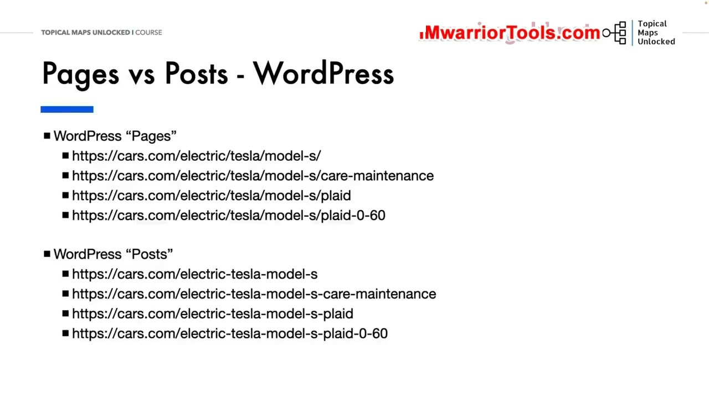
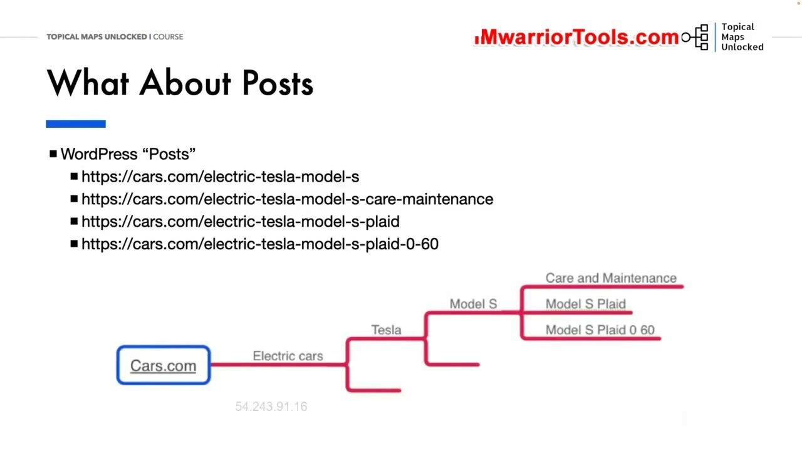

How Topical Maps Influence Site Architecture, Internal Links, and Anchor Text
1. Kiến trúc trang web là gì và cách Topical Map trực tiếp định hình nó
Trong bài học này, Yoyao làm rõ khái niệm Site Architecture (Kiến trúc trang web) và mối liên hệ mật thiết của nó với bản đồ chủ đề. Kiến trúc trang web đề cập đến toàn bộ cách thức tổ chức, thiết kế và sắp xếp tổng thể của một website, bao gồm:
- Bố cục sắp xếp và cách tổ chức các trang nội dung.
- Mối quan hệ phân cấp hữu cơ giữa các trang (trang cha, trang con, trang đồng cấp).
- Cách thức người dùng thực tế điều hướng và cách thức bot của công cụ tìm kiếm thu thập dữ liệu (crawling).
Topical map tác động trực tiếp và định hình kiến trúc trang web: nó quyết định cách các chủ đề chính, chủ đề phụ và nội dung được nhóm lại với nhau, đồng thời quy định cách các trang liên kết nội bộ với nhau một cách có chiến lược.

2. Một kiến trúc website tốt: Điều hướng rõ ràng và Chuỗi đường dẫn Breadcrumbs
Một Kiến trúc trang web tốt (Good Site Architecture) mang lại những giá trị vô cùng to lớn cho cả trải nghiệm người dùng lẫn hiệu quả SEO:
- Cung cấp khả năng điều hướng cực kỳ rõ ràng (Provides clear navigation): Người dùng luôn biết chính xác họ đang ở đâu và có thể dễ dàng quay lại các cấp trước đó.
- Hiển thị chuỗi đường dẫn phân cấp Breadcrumbs hoàn hảo: Ví dụ kinh điển:
Home > Electric Cars > Tesla > Model S. Chuỗi Breadcrumbs này vừa giúp người dùng định hướng, vừa giúp Google hiển thị cấu trúc trang đẹp mắt trên kết quả tìm kiếm. - Tạo ra tổ chức logic chặt chẽ (Provides logical organization): Giúp việc truy cập thông tin trở nên dễ dàng và nhanh chóng nhất cho khách truy cập.
- Thể hiện chuyên môn sâu sắc trong ngành: Xây dựng sự tin cậy vững chắc với người dùng và các thuật toán tìm kiếm.

3. So sánh Pages vs Posts trên WordPress: Tổ chức phân cấp cha - con
Khi triển khai kiến trúc trang web lên hệ quản trị nội dung phổ biến như WordPress, Yoyao phân tích sự khác nhau giữa hai định dạng: Pages (Trang tĩnh) và Posts (Bài viết blog).
Đối với định dạng Pages, WordPress hỗ trợ tính năng phân cấp Trang cha - Trang con (Parent and Child Pages) một cách tự nhiên. Bạn có thể dễ dàng tạo ra cấu trúc đường dẫn thư mục URL lồng nhau hoàn hảo phản ánh đúng Topical Map:
- Trang cha (Parent Page):
/electric/ - Trang con cấp 1 (Child Page):
/electric/tesla/ - Trang con cấp 2 (Child Page):
/electric/tesla/model-s/ - Trang con cấp 3 (Child Page):
/electric/tesla/model-s/care-maintenance/
Cấu trúc này tạo ra sự phân cấp URL vật lý tuyệt đẹp, giúp củng cố tín hiệu kiến trúc một cách mạnh mẽ nhất.

4. Xây dựng kiến trúc phân cấp cho Posts dựa vào Internal Links và Anchor Text
Tuy nhiên, rất nhiều website lựa chọn xuất bản nội dung dưới dạng Posts (Bài viết) với cấu trúc đường dẫn phẳng (ví dụ: https://cars.com/electric-tesla-model-s-care-maintenance/) để giữ URL ngắn gọn. Vậy làm thế nào để thể hiện cấu trúc phân cấp chủ đề trong trường hợp này?
Yoyao giải thích: Đối với định dạng Posts, Topical Hierarchy hoàn toàn phụ thuộc vào chiến lược Liên kết nội bộ (Internal Linking) và Văn bản neo (Anchor Text)!
Bạn không cần có cấu trúc thư mục URL lồng nhau phức tạp thì mới có thể làm SEO ngữ nghĩa. Thay vào đó, bạn kết nối logic các bài viết lại với nhau bằng các liên kết nội bộ chiến lược bám sát theo sơ đồ Mind Map: Các bài viết con trỏ liên kết ngược về trang trụ cột (Pillar page) bằng các anchor text chính xác, và trang trụ cột liên kết tỏa ra các bài viết hỗ trợ. Chính mạng lưới liên kết nội bộ chặt chẽ này sẽ truyền tải toàn bộ tín hiệu phân cấp chủ đề tới Google một cách trọn vẹn và mạnh mẽ nhất.

Nguồn và đối chiếu
- Topical Maps Unlocked 2.0 · 03-How Topical Maps Influence Site Architecture, Internal Links, and Anchor Text (Video bài học chính).
- Đối chiếu ngữ nghĩa với bản tiếng Anh: Bản Tiếng Anh/04-Tropical Maps Module/03-How Topical Maps Influence Site Architecture, Internal Links, and Anchor Text.mp4 (xác thực so sánh Pages vs Posts trên WordPress, Breadcrumbs và vai trò của Anchor Text).